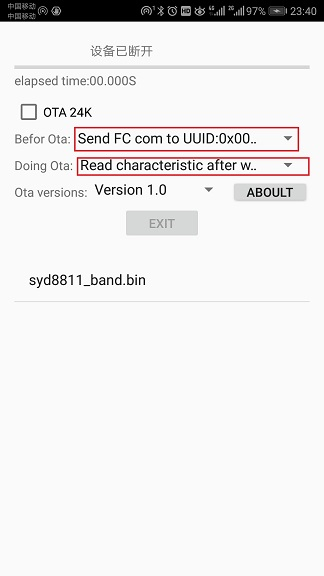
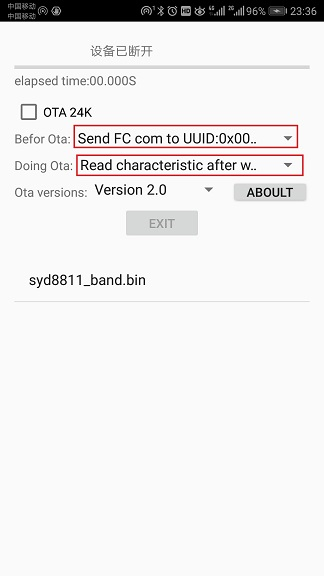
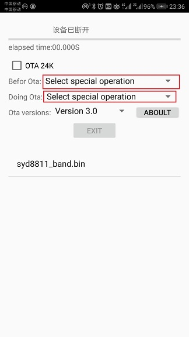

�������Ȩ�����ɶ�ʢо�Ƽ�SYDTEK�����������뿴������http://www.sydtek.com/
ʵ��OTA�Ĺ���Ҫʵ���ֻ�APP�˵Ĵ����SYDTEK�����豸�˵Ĵ��룬���˴�������ָ��������ϸ�ĵ���������Ժ�����ȡ�����ݴ���ֱ��ǡ�SYDTEK OTA�豸��ʹ��˵��.PDF��,��SYDTEK OTAͨ��Э��˵��.docx������OTA2.0Э�����ϣ�SYDTEDֻ���ṩ���˵�Դ����;����OTAЭ�飬����IOS�˵Ĵ��뽫�����ṩ��������ֲ���˴��뵽IOS�˻��߲ο�Э���Լ�дIOS�˵Ĵ��룡
��OTA������������ѡ�
1.OTA 24K����ѡ�ѡ�е�ʱ������ʱOTA����SYD8801��24K�ռ�ľ�̬���ݣ���Ȼ����SYD8821��SYD8811���൱��FLASH DATA�����ݣ�����ѡ�е�ʱ������ʱOTA���Ǵ��룬Ĭ�ϲ�ѡ�У�
2.before Ota,��ѡ������ڽ���OTA֮ǰ�ɷ�Ҫ����ijЩ����Ĵ��������¿�ѡ���ܣ�
A.Select special operation����ѡ�������OTA֮ǰ��������κζ���IJ�����
B.Send FC com to UUID:0x0001,�ù��ܴ�����OTA֮ǰ��ͨ��UARTͨ������FC�����SYD8801���ֻ��Ȳ�Ʒ�л�ͨ����������������ٶȵ�������Ҳ������������Ĺ��ģ��Ա�֤OTAͼ���и�����ٶȣ�
3.Doing Ota,��ѡ�������ota�����еľ�����Ϊ�������¿�ѡ���ܣ�
A.Select special operation����ѡ�������OTA֮ǰ��������κζ���IJ�����
B.Read characteristic after write,�ù��ܴ�����OTA�������� write read write read.......,Ҳ����д��һ�����ݰ���Ҫ��ȡһ�Σ������ķ�ʽ�ȽϿɿ��������ٶ�ʮ������
Version 1.0
�ð汾OTA��SYD8801��OTAЭ�飬����SYD8821��SYD8811�ڴ���С��65536Byte��Ҳ�ǿ���ʹ�õģ����ǵ�����������65536Byte��ð汾��OTA���������ã�
�ð汾��OTAһ��ʹ�õ�ѡ�����£�

Version 2.0
�ð汾OTAЭ���ǻ��ڡ�Version 1.0�������������Ϊ65536Byte�����⣬ͬʱ��������ɺ������豸�˻����ϱ��Ƿ������ɹ�����Ȼ��������Э�飬�����豸�˵Ĵ���ҲҪ��Ӧ���ģ�
�ð汾��OTAһ��ʹ�õ�ѡ�����£�

Version 3.0
�ð汾OTAЭ���ǻ��ڡ�Version 2.0����ͬʱ�����Э���кܴ�ĸĶ������÷ֶδ������ʽ��ÿ�δ��仹�����У��ֵ�ıȽϣ�
�ð汾��OTAһ��ʹ�õ�ѡ�����£�

�ɶ�ʢо�Ƽ�����˾��SYDTEK��ǰ�������2012�꣬�ɾ��зḻ����ͨ��оƬ��ƾ���ĺ����Ŷ��齨���ɣ��Ŷӳ�Ա��Ҫ�����廪��ѧ�����ӿƼ���ѧ��ѧ����רע�ڳ�����������BLE������������ƵоƬ��ơ����������ۡ���Ʒ������SYD88XXϵ�г�����������BLE����оƬ��SYD66XXϵ������������ƵоƬ��
�ɶ�ʢо��SYDTEK���ڳɶ���̨�����������з����ģ����������м���֧�ֺ��������ġ���˾���ҵ����������ҵ�н���Э���ͼ�����ͨ������ơ��������г�����ӵ�зḻ�ľ��顣�������귢չ���ɶ�ʢо��SYDTEK���Ѿ��ڳ�����������оƬ���������ļ������ۣ���������ȫ��һ�����ĸ�����BLE������оƬ���Լ�ȫ���һ�ż������ʴ������ij�����BLEоƬ��Ϊ�й�о��ש���ߡ�
�ɶ�ʢо�Ƽ�����˾�����ڳ�Ϊ����������������������������ƵоƬ���쵼�ߡ�
SYDTEK - Sail Your Dreams